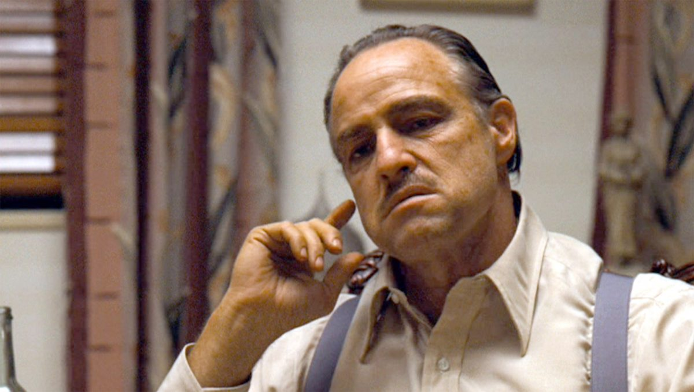
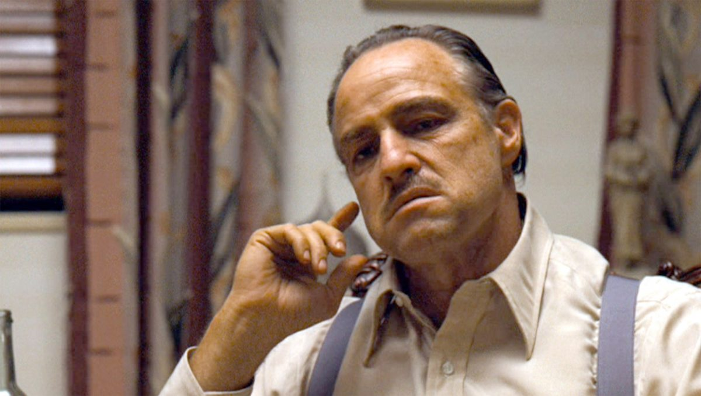

Bojack
Bojack is a nearly 5-year old tuxedo domestic shorthair cat. Nearly 5 years ago a friend of mine found him outside of a dumpster and asked if I would like a kitten. I, of course, said 'yes.' Bojack is headstrong and stubborn, always getting everything he wants by being aggressively annoying.
If Bojack were not a cat, he would be a fictional mafia boss. He's big, sturdy, and intimidating. He has immense love for his mother and has taken one of the other cat's under his wing as an apprentice. Bojack will steal food from the other cats and they let him do it. Most of his days are spent sitting in his chair and giving me an uninviting glare (as shown below).
 

Todd
Todd is a 3 year old tuxedo domestic shorthair, named after the pesky, aloof roommate of Bojack from the Netflix original show 'Bojack Horseman.' Knowning I have an affinity for tuxedo cats, the animal hospital I used to work at called and asked if I would like a tuxedo kitten from a litter they were taking care of. I could not turn away a little kitten in need so I took in Todd.
If he were not a cat, Todd would be an OSHA inspector. Todd is always very concerned about what everyone else is doing and if it meets all required safety protocols. He likes to sleep on top of whoever lays on the couch to insure they do not require assistance while they are asleep. Todd also stands guard in the bathroom while anyone takes a shower to make sure there are no preventable accidents.
Gancho
Gancho is 2 years old and joined my famliy of tuxedo cats when my partner moved in with us. Gancho is a stunning brown tabby domestic shorthair, long and slender in physique. He is best known for being elusive and liking pets only a little bit...but not too much.